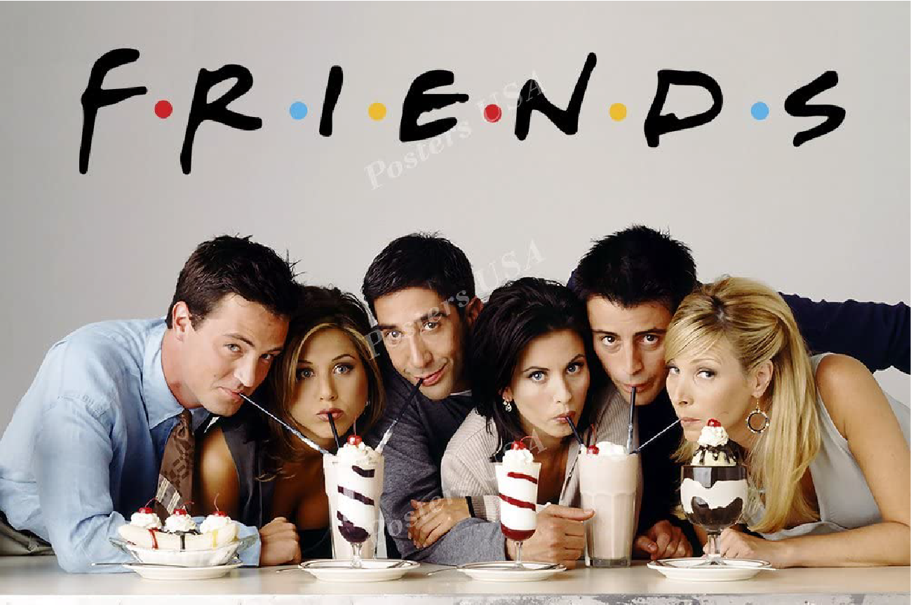
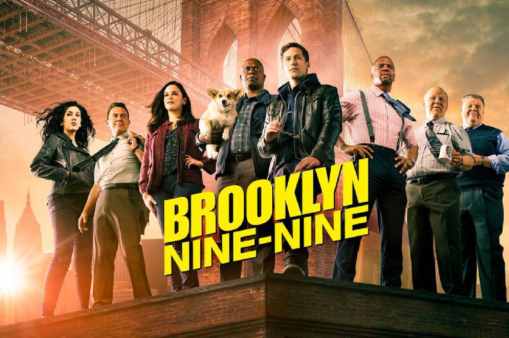
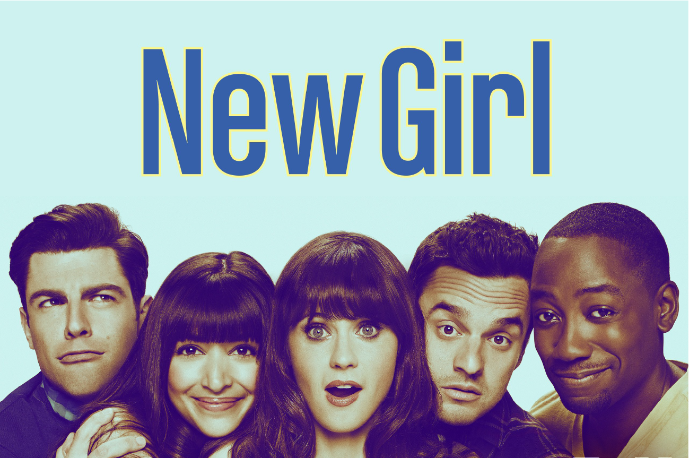
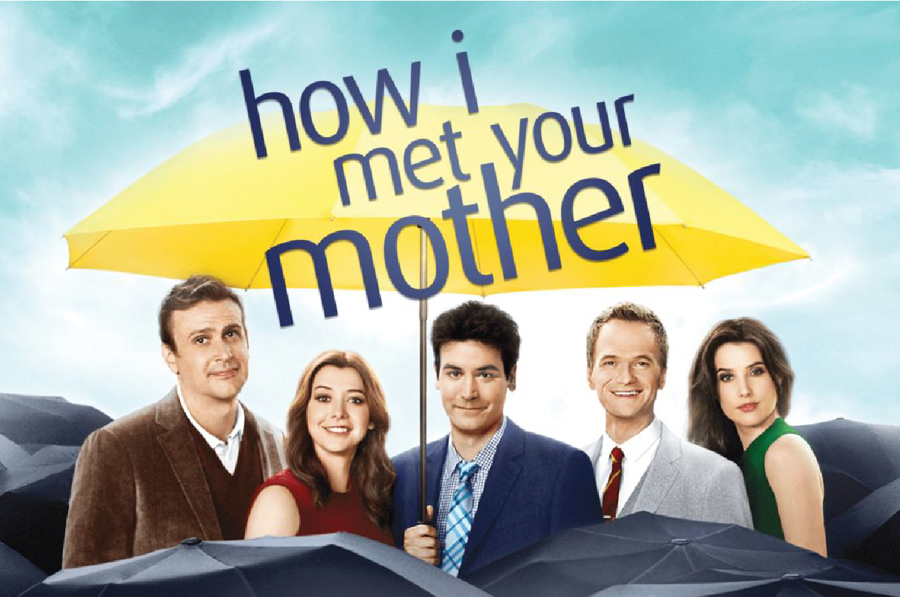

<!DOCTYPE html>
<html>

<head>
    <title>Welcome Home</title>
    <meta name="viewport" content="width=device-width,initial-scale=1.0" />
    <meta charset="utf-8" />
    <link rel="stylesheet" href="stylesheet.css">
    <link rel="stylesheet" href="https://use.typekit.net/pzw0rdz.css">
    <link rel="icon" type="image/x-icon" href="images/favicon.png">
    <link rel="stylesheet" href="https://use.typekit.net/jnj6srp.css">
    <style>

    </style>
</head>

<body>
    <main>
        <aside id="title">
            <span>IT'S</span> <span>SHOW</span> 
            <span>TIME.</span>
        </aside>
        <aside id="recent">
            WATCH WITH ME...
        </aside>
    </main>


    <article id="nav-article">
        <aside id="nav-aside">
            <nav id="nav-previous">
                <a id="nav-a" href="https://thihamz.github.io/harmonic_collection/entry-2/index.html">
                Previous Project
                </a>
            </nav>
            <nav>
                <a id="nav-a" href="https://thihamz.github.io/harmonic_collection/">
                Home
                </a>
            </nav>
            <nav id="nav-next">
                <a id="nav-a" href="https://thihamz.github.io/harmonic_collection/entry-4/index.html">
                Next Project
                </a>
            </nav>
        </aside>
    </article>

<article id="article-body">
    <aside id="aside-content">
        <div class="show-titles">
            FRIENDS
        </div>
        <div class="show-info">
            Friends is an American television sitcom created by David Crane and Marta Kauffman, which aired on NBC from
            September 22, 1994, to May 6, 2004, lasting ten seasons.[1] With an ensemble cast starring Jennifer Aniston,
            Courteney Cox, Lisa Kudrow, Matt LeBlanc, Matthew Perry and David Schwimmer, the show revolves around six
            friends in their 20s and 30s who live in Manhattan, New York City. The series was produced by
            Bright/Kauffman/Crane Productions, in association with Warner Bros. Television. The original executive
            producers were Kevin S. Bright, Kauffman, and Crane.
        </div>
        <div>
        
        </div>
    </aside>

    <aside id="aside-content">
        <div class="show-titles">
            BROOKLYN 99
        </div>
        <div class="show-info">
            Brooklyn Nine-Nine is an American police procedural comedy television series that aired on Fox, and later on
            NBC. The show aired from September 17, 2013, to September 16, 2021, for a total of eight seasons and 153
            episodes. Created by Dan Goor and Michael Schur, it revolves around Jake Peralta (Andy Samberg), a New York
            City Police Department (NYPD) detective in Brooklyn's 99th Precinct, who often comes into conflict with his
            commanding officer, the serious and stern Captain Raymond Holt (Andre Braugher). The rest of the cast
            features Stephanie Beatriz as Rosa Diaz, Terry Crews as Terry Jeffords, Melissa Fumero as Amy Santiago, Joe
            Lo Truglio as Charles Boyle, Chelsea Peretti as Gina Linetti, Dirk Blocker as Michael Hitchcock, and Joel
            McKinnon Miller as Norm Scully.
        </div>
        <div>
        
        </div>
    </aside>

    <aside id="aside-content">
        <div class="show-titles">
            NEW GIRL
        </div>
        <div class="show-info">
            New Girl is an American television sitcom created by Elizabeth Meriwether and produced by 20th Television
            for Fox that originally aired from September 20, 2011 to May 15, 2018. The series revolves around a kooky
            teacher, Jessica Day (Zooey Deschanel), after she moves into a Los Angeles loft with three men, Nick Miller
            (Jake Johnson), Winston Schmidt (Max Greenfield), and Winston Bishop (Lamorne Morris); their former roommate
            Coach (Damon Wayans Jr.) and Jess' best friend Cece Parekh (Hannah Simone) are also part of the series. The
            show combines comedy and drama elements as the characters, who are in their early thirties, deal with
            relationship issues and career choices. New Girl is a joint production between Elizabeth Meriwether Pictures
            and 20th Century Fox Television and is syndicated by 20th Television.
        </div>
        <div>
        
        </div>
    </aside>

    <aside id="aside-content">
        <div class="show-titles">
            HOW I MET YOUR MOTHER
        </div>
        <div class="show-info">
            How I Met Your Mother (often abbreviated as HIMYM) is an American sitcom, created by Craig Thomas and Carter
            Bays for CBS. The series, which aired from September 19, 2005 to March 31, 2014, follows the main character,
            Ted Mosby, and his group of friends in New York City's Manhattan. As a framing device, Ted, in 2030,
            recounts to his son, Luke, and daughter, Penny, the events from September 2005 to May 2013 that led him to
            meet their mother. How I Met Your Mother is a joint production by Bays & Thomas Productions and 20th Century
            Fox Television and syndicated by 20th Television (now Disney-ABC Domestic Television).
        </div>
        <div>
        
        </div>
    </aside>
</article>

</body>

</html>